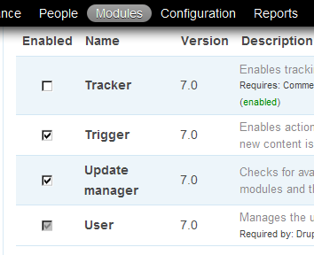
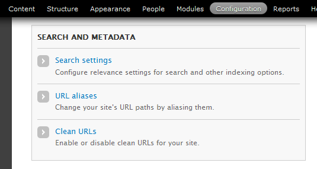
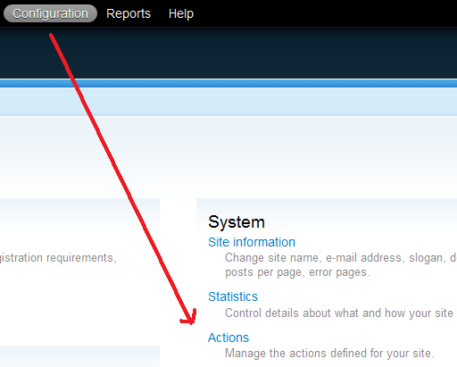
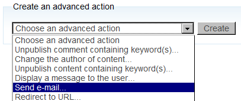
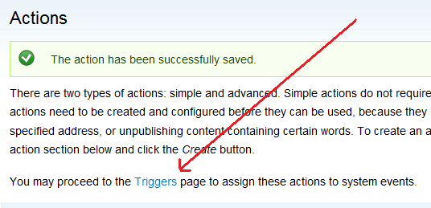
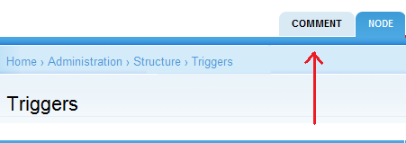
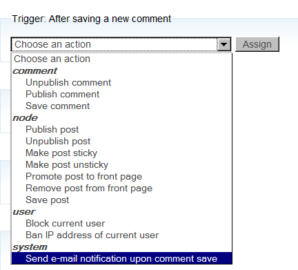
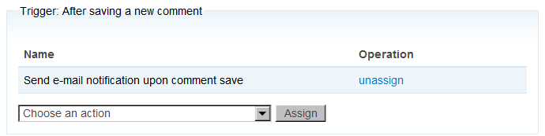

How to send email notifications for comments in Drupal 7 with actions & triggers (or the Rules module)
 Do you have a Drupal 7 web site? Do you want to get an email when someone comments, so you don't have to check your site all the time? Don't panic! Here's how you do it.
Do you have a Drupal 7 web site? Do you want to get an email when someone comments, so you don't have to check your site all the time? Don't panic! Here's how you do it.
You don't need to install any new modules to do this in Drupal 7. All that's needed is a little configuring and to copy and paste in a short bit of code.
Update: Both the easiest & most powerful way to get these notification emails (in Drupal 6 or 7) is to install and configure the Rules Module. NodeOne has a great set of video tutorials on their site explaining how to use the Rules module. I've also put example code for a Rules-based email notification in the comments to this post for both Drupal 6 and Drupal 7.
- Step 1: Getting started
- Step 2: Taking action
- Step 3: Triggering your action
- Step 4: Testing it out
- For more information
Step 1: Getting started
Go to the Modules page, and make sure that you enable the Trigger module (at Modules > Trigger) and turn on Clean URLs (at Administer > Configuration > Search and metadata). These are core modules/settings in Drupal 7, so you don't have to install them, just turn them on.

Step 2: Taking action
Your next step will be to create an action, so that drupal can perform it when a comment is saved.
Go to Configuration > System > Actions.

On the Actions page, choose the dropdown for Create an Advanced Action at the bottom of the page, and click on Send email and then Create.

On the Configure an advanced action page, fill in the first 3 fields, as in these examples:
- Label: Send an email notification to site owner upon comment save
- Recipient: siteowner@adellefrank.com
- Subject: New Comment at AdelleFrank.com
The trickiest part of this entire endeavor is filling in the Message field, but here's some easy sample code that you could just copy and paste in:
### Node
[comment:node:title] at: [site:url]node/[comment:node:nid]#comment-[comment:cid]
### Comment
[comment:author:name]
[comment:title]
[comment:body]
### Review
[site:url]admin/content/comment/approval
Those bits of code within square brackets are called tokens. Tokens are placeholders, little bits of code that represent commonly-used values. To find more tokens in Drupal 7, you must have two modules enabled. First, turn on the core Help module, which you should have enabled anyway...because it's helpful. However, I find it bizarre that, even though you're only using tokens included in the Core, you must still install and turn on the Token module, too.
Only then can you point your web browser to the Help > Token page at http://www.yoursite.com/admin/help/token and get a list of all the tokens you can choose among.
Step 3: Triggering your action
At the top of the page, click on the Triggers link to go to the next step. This page can also be found underneath Structure > Triggers.

Be sure to choose the comments tab on the Triggers page.

You have a number of choices, but since mine is a solo blog, Trigger: After saving a new comment seems most appropriate. Click on the dropdown instructing you to Choose an action and click underneath system on the name of the Action (Send an email notification to site owner upon comment save) you created in Step 2 and then click Assign.


Step 4: Testing your comments form
Now, as far as you know, your web site is set up to email you when someone saves a comment. To be absolutely certain that your new action and trigger are working correctly, you need to test it.
Browse to any page, article, or blog post on your site and post a comment.
Check your email at the address you chose in step 2. Does this email give you the information you expected?
Remember to delete your test comment off of your site.
Comments
pike
comment:url
I have a token called [comment:url] that does the job ..
Adelle Frank
Another idea: Clean URLs
I've tried this out and I can't figure out WHY the
[comment:cid]token isn't outputting the anchor tag for the latest comment (it's working fine in my test system).As for why you don't just get redirected to the page the comment is supposed to be on, I have an idea. I notice on your site you don't have clean URLs turned on, which makes the path for your pages use a
?q=before the node reference in the URL (http://garland.radiuscleveland.com/?q=node/4). Perhaps this is part of the issue?In fact, I'm going to add this tip to my getting started section. Thanks, Mike!
Adelle Frank
Check whitespace and permissions
Hey, Mike:
I have 2 ideas for troubleshooting this issue:
#comment-and[comment:cid].Let me know if this helps,
Adelle
Michael
Nice tutorial
Nice tutorial, got me running fast!
Many thanks!
Adelle Frank
You're welcome
You're welcome, Michael.
Thanks for the positive feedback!
Visitor
Works a treat
Thanks - you're a bloody legend!
Did what was needed and more.
Adelle Frank
Glad to help
Thanks, Visitor, I'm glad this helped you!
ztank
Easy way to get notifications on posts where I leave comments?
Hi,
nice post but I'd like to know if there is an easy way to get notified every time a new comment is added to a post where I previously left my comment.
Something like comment_notify module: http://drupal.org/project/comment_notify
AFAIK this one is still in alpha and apparentely there is no other way to implement such a behaviour.
Are you aware an alternative way?
Ciao,
Claudio
Adelle Frank
Comment_notify module looks best
Sorry, Claudio:
I am not aware of an alternate way. :(
I think you're right that the comment_notify module is probably the best solution right now. Of course, I haven't yet dived into the Rules module enough to know if there's a way that Rules could make this to happen.
Ciao!
Robin
18 months on ...
Adelle, I'm trying something like this using Flag and Rules. I'm trying to use Flag to allow users to "watch" either Articles or Posts or Comments and am trying to get Rules to send an email to users who've set flags. But I'm struggling. Flag looks ok (the buttons are there and look fine), but there're no actions associated with them - no email gets sent... probably because I'm struggling to find how to get Rules to set that up! :D So far I've installed Flag and Rules and then: Token, Entity, VBO, Views and now Ctools. I'm drowning in modules! Can you shed light on the fundamental process here?? Is VBO what I need to send batch emails to users who've flagged things??